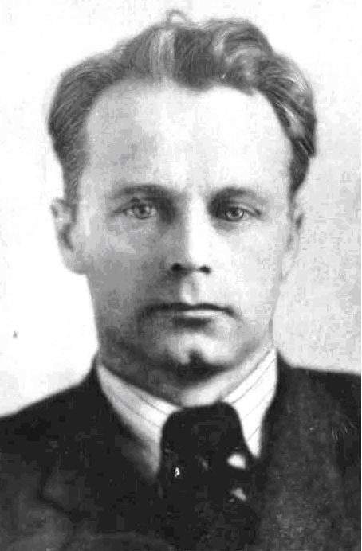
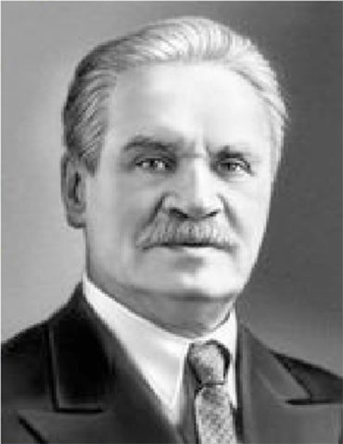
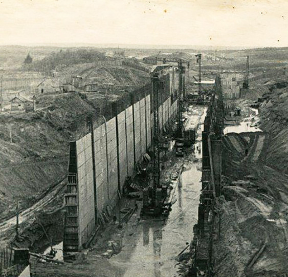

Миша Смирнитский поступил на исторический факультет Ивановского пединститута, а мы с Василием Конузиным поехали поступать в Ивановский текстильный институт. Сдали все экзамены кроме математики – не осилив письменную часть, были не допущены к устной. Документы нам вернули – а на дворе уже конец августа! Пошли в педагогический институт, где встретили радостного Смирнитского и рассказали ему о нашей проблеме. Мол, не против пойти учиться в его институт. Разыскали председателя студенческого профкома Сергея Смирнова и секретаря комитета комсомола института Тоню Никитину (через несколько лет они поженятся, а ещё позже я женюсь на младшей сестре Сергея Марии) – пошли они оба нас выручать. Нашли декана исторического факультета Журавлёва и обратились к нему с просьбой. Нам назначили сдать экзамен по истории СССР и географии, чтобы поступить в 2-годичный учительский (а не в 4-годичный педагогический) институт. И сделать это следовало за 2 дня. Помню, как в библиотеке с утра 30 августа мы учили историю СССР, а вечером пошли сдавать Журавлёву экзамен. Он увидел, что мы парни грамотные и сказал – завтра сдадите географию и мы вас примем. Во второй половине дня 31 августа мы успешно сдали второй экзамен старичку Десницкому, гонял он нас по нескольким картам, а мы на все вопросы давали чёткие ответы.
С.Смирнов, А.Смирнова (Никитина). г.Пучеж, 1938г.
Ивановский государственный педагогический институт
А.Осин (слева) с однокурсниками. г.Иваново, 1936г.
1 сентября 1936 года, придя в институт на ул.Нижегородской, мы увидели себя в списках 1 курса 1 группы истфака учительского института. Тут же дали домой телеграммы что начали учиться, а названия института не сообщили. Лекции по истории СССР, истории педагогики и психологии слушали вместе с потоком 4-годичного обучения. Курс археологии, а затем и древней истории, нам читал «древний» старичок – нудно, но содержательно. Занятия шли в 2 смены (не хватало учебных аудиторий). В первый учебный день в перерыве между 1 и 2 сменами во дворе института провели митинг, где выступил директор Степанов, кто-то из преподавателей и студентов. Большого торжества и принятия клятвы, как в Костромском текстильном институте, не было. Но всё равно было приятно – мы теперь студенты. Поселили приезжих в общежитие на ул. Новой. Сергей Смирнов привёз на грузовой машине кровати без постельного белья, но предупредил, что за здание может быть борьба со стороны торгового техникума. Так оно вскоре и вышло. Подъехали – также с кроватями – «конкуренты», ворвались в коридор и началась крепкая потасовка. Выдворить их удалось с помощью милиции. И пока начальство разбиралось с этим вопросом, началась вторая ночь на новом месте. Мы с Василием одной кроватью припёрли входную дверь, а на другой разместились сами, привязавшись к кровати брючными ремнями. Утром зашёл к нам Сергей и не велел ходить на занятия, иначе здание займут. Но вопрос решился – нас постепенно разместили в здании общежития на углу улиц Красноармейской и Социалистической, где жили и студенты старших курсов. Внизу на 1 этаже был хлебный магазин и нашими «гостями» были огромные крысы. Девушки их боялись, поднимали крик по ночам. А мы к таким «соседям» привыкли. У меня под койкой крысы прогрызли большую багажную корзину. Дыру сначала закрывали обувью, потом институтский плотник заделал отверстие капитально. Но серая скотина всё равно иногда пробиралась к нам, где-то в отверстия у труб отопления. На ноябрьские праздники все пучежане поехали домой – по реке, хотя было уже небезопасно и ожидали ледостав. Дома меня встретили тепло, но удивились, что я учусь в педагогическом, а не в текстильном институте. Позже зимнюю сессию (психология, история педагогики, история СССР, древняя история) я сдал на одни четвёрки. А тогда, увидев в ноябре Волгу, я понял, как скучаю по большой реке и загорелся желанием перевестись на учёбу в г.Горький. Надоел мне запах речки, текущей от фабрик. В Иваново говорили: «Стоит город могучий на Уводи вонючей».
В мае я написал письмо директору Горьковского пединститута с просьбой принять меня в порядке перевода. В Горьком согласие дали, а из Иваново меня не отпустили. Я пошёл на риск и не стал сдавать экзамены за второй семестр, чтобы получить документы. И в июне меня просто исключили из института за несдачу экзаменов, выдав справку о сдаче зимней сессии. Простился я с нашими ребятами – все меня ругали, особенно Сергей и Тоня – и отправился в Горький. Там в первый же день с утра я пошёл на Волгу. Вижу – у пристани стоит теплоход «Память Хохрякова», а на палубе сидит лоцман, «дядя Коля» Лукьянычев. Так мы обрадовались нашей встрече! Я ему рассказал о своих институтских скитаниях и сказал, что собираюсь переводиться в пединститут на исторический, наверное, факультет. Он пристально посмотрел на меня и сказал, что дело не в институте, что скучаю я именно по Волге и быть мне на всю жизнь верным волгарём, речником. Поэтому путь мой только в институт инженеров водного транспорта, ГИИВТ. Лукьянычев пригласил меня к себе в каюту, вырезал из тетради лист бумаги и написал просьбу на имя директора института принять меня на 1 курс без экзаменов, так как я уже в 1933 году за рулём парохода «Академик Бах» сдал экзамены на второго рулевого при поездке до Астрахани и потом неоднократно ходил на пароходе «Память Хохрякова» по линии Горький-Рыбинск и стоял ночные вахты. Я был подкуплен такой рекомендацией и после обеда поехал в водный институт со всеми документами и письмом лоцмана, который имел большой авторитет и известность по всей Волге.
Горьковский институт инженеров водного транспорта, 1930-е
Директор ГИИВТ З.А.Шашков
Директор ГИИВТ Зосима Алексеевич Шашков меня принял, прочитал письмо, посмотрел документы и сказал, что принимает меня без экзаменов на 1 курс факультета судовождения и пожелал мне успехов. В коридоре института я встретил своего одноклассника (до 9 класса) Геннадия Прямилова – он сказал, что второй год пытается поступить на судовождение и одобрил мой выбор. Вечером я доехал с «дядей Колей» на пароходе до Пучежа и честно всё дома рассказал. Папа, мама и сестра Нюра только ахнули, что на их глазах вырос такой «студент-путешественник» и, конечно, расстроились, но ругать меня не стали. Июль и август я помогал дома по хозяйству – окучивал картошку, поливал капусту, рыбачил с отцом. Корову пришлось продать, так как заготавливать корма без меня стало трудно – здоровье не позволяло отцу выкашивать много травы на острове. Приходилось теперь покупать молоко, творог, масло, сметану. В Пучеже мне встретился бывший одноклассник Гриша Белянкин, который готовился поступать в Горьковский пединститут на физмат. Узнав, что я подал документы в речной институт, он удивился моему решению и высказал сомнение, что я на этом закончу «бегать по институтам». И его предвидение сбылось.
В августе, войдя в вестибюль горьковского пединститута, я увидел объявление, что с текущего учебного года открывается новый географический факультет. В том же объявлении было сказано, что студенты нового факультета будут совершать экспедиции и путешествия по Советскому союзу, изучать такие предметы как топография, геология, минералогия, фитогеография, зоогеография, климатология, метеорология, геодезия, картография, землеведение, краеведение, общая физическая география ССР, экономическая география СССР и другие. Почти все эти науки были новыми и интересными для меня. Я узнал у руководства пединститута, могут ли меня принять на 1 курс геофака без сдачи вступительных экзаменов. Меня попросили показать документы для принятия решения. И я отправился за документами в ГИИВТ. Там меня направили к директору института Шашкову, и он мне с ходу отказал, мотивируя тем, что я почти уже готовый судоводитель. Помолчали, посмотрели друг на друга и затем, когда я ещё раз слёзно попросил, директор сказал: «Пишите заявление с просьбой и забирайте свои документы, хотя жаль вас отпускать». Внизу на моём заявлении поставил визу: «Возвратить документы. Шашков». В пединституте меня принял завуч, посмотрел мои документы и написал записку в приёмную комиссию: «Зачислить на 1 курс географического факультета Осина Александра Дмитриевича». Когда меня оформляли, в приёмную комиссию зашёл декан геофака Иван Петрович Далматов, кандидат философских наук. Он попросил меня зайти к нему в деканат, где состоялась моя с ним обстоятельная беседа. Я рассказал о моей жизни, учёбе, общественной деятельности и о нашей семье. В ходе беседы он что-то записывал себе в общую тетрадь, сказав напоследок: «Давайте, Александр, поставим поступлением на геофак точку в поисках себя, согласны?». Я поблагодарил за совет и беседу и обещал остановиться. Декан улыбнулся, пожал мне руку и добавил, что если есть у меня желание читать лекции, то он посодействует включению меня в лекторскую группу горкома комсомола. Я сказал декану спасибо. Из института я вышел ободрённым и уверенным в себе. Дома в Пучеже я рассказал семье о нашей беседе с деканом, покаялся в своих похождениях по институтам и заверил, что это последнее моё решение. Дома вроде бы мне поверили. Папа только сделал одно замечание, что я всё же получил в жизни опыт зарабатывать деньги сам и тратить их разумно, не очень полагаясь на помощь родителей.
И.П.Далматов
Горьковский государственный педагогический институт
Н.П.Киреев (фото 1970-х гг.)
1 сентября 1937 года в сквере рядом со зданием Горьковского педагогического института на площади Минина был очень торжественно проведён праздник начала учебного года, «День Знаний» как сейчас его называют. Студенты колоннами с оркестром во главе обошли площадь кругом и пошли в институт. Сначала выступил с речью директор института Киреев. Потом старшекурсники исполнили гимн института и вручили букеты цветов преподавателям и первокурсникам. Потом все разошлись по факультетам и группам. На геофаке были набраны 2 группы по 30-35 человек. На выборах старосты группы декан предложил мою кандидатуру. Я встал, коротко рассказал о себе и меня избрали единогласно. Одна из студенток группы, горьковчанка, отпечатала дома анкеты для опроса студентов. Вопросы были – ФИО, место рождения, место жительства, кто родители, состав семьи и её материальное обеспечение, устраивает ли общежитие и если нет, то почему, какую общественные поручения выполняли в школе, когда и где вступили в комсомол, что привело на геофак и какой вклад можете внести в сплочение коллектива группы. Все студенты ответственно подошли к заполнению анкеты и в этих данных как в зеркале отразилось лицо нашей группы. И каждый знал о каждом почти всё, что нужно для дружной жизни в коллективе. Декан факультета одобрил мою инициативу, и студенты увидели во мне оригинальную личность. В работе старосты мне активно помогала Вера Хвощёва, с которой я подружился с первых дней учёбы, а совсем недавно, через 48 лет после окончания института мы встретились в Москве…
В ноябре того же года на выборном комсомольском собрании факультета меня избрали секретарём факультетского бюро, это было большим доверием для первокурсника. Были учтены моя биография, трудовой и студенческий опыт и особенно общественная комсомольская работа. Декан и тут поддержал мою кандидатуру. В состав бюро по моей просьбе включили и Хвощёву, ей доверили культурно-массовый сектор. В ней не ошиблись, она была очень обаятельная, весёлая и заводная девушка, умела завлечь других. К концу первого курса о нашем факультете заговорили как о самом организованном и весёлом коллективе. С первых же дней все увлеклись учёбой, лекции читали опытные преподаватели – кандидаты и доктора наук, в том числе крупные московские учёные, такие, как автор «Занимательной минералогии» академик А.Е.Ферсман. Психологию читал соавтор учебника «Психология для вузов» Василевский. Он любил получать вопросы от студентов и тут же спрашивал, каково мнение об этом самого студента. На мой вопрос «Как можно объяснить с точки зрения психологической функции любовь» он тоже захотел узнать моё мнение. И я смело сказал: «Любовь – это такая психологическая функция, основанная на физическом влечении и подкреплённая умственными соображениями». Хохот в зале долго не умолкал, смеялся и сам профессор. Потом он попросил меня повторить сказанное и, записав, сказал, что впервые слышит такое «научное» определение и следует в это вдуматься.
«Основы марксизма-ленинизма» читал доцент Обичкин Геннадий Дмитриевич, завуч и секретарь парткома института. Материал он давал глубоко и содержательно, но немного скучновато. В моей общественной деятельности он сыграл огромную роль. А если вспомнить, кто был первым моим духовным наставником, так это Никанор Иванович Тузов, работник льнопрядильной фабрики – «Кона», как мы его любовно называли. Мастер цеха тогда подвёл меня, молодого смазчика к пожилому мужчине и сказал: «Вот, Александр, «дядя Кона» будет твоим наставником. Слушайся его, он многому в жизни тебя научит». У нас с ним установились дружеские отношения, «дядя Кона» бывал у нас дома. Он хорошо знал моего отца, интересовался, что я читаю, с кем веду дружбу, где бываю вне дома. Как видите, мне везло в жизни с наставниками. После учительского влияния на меня в школе, благоприятной обстановки дома я всё время был под наблюдением и влиянием вышеуказанных товарищей. А самым близким моим советчиком и критиком был декан нашего географического факультета Иван Петрович Далматов. Ему я благодарен за «науку жизни». На факультете читали лекции преподаватели Горьковского университета: Соболев, Лапшин, Сеятицкий, Приматов, Кульманаевский, Фатьянов, Баранский и другие. Со студентами 1 курса на реке Мыза под Горьким доценты Лапшин и Соболев проводили практические работы.
А.Е.Ферсман

А.С.Фатьянов

Н.Н.Баранский
Н.М.Романов
Нашим любимцем был доктор геолого-минералогических наук Николай Михайлович Романов, председатель научного общества г.Горький и большой знаток геологии Поволжья. От нашего декана он узнал о том, что я читаю лекции «Проблемы Большой Волги» и попросил меня выступить с такой лекцией в научном обществе, основательно подготовившись. Также он спросил, не знаю ли я профессора Осина Бориса Васильевича, читающего лекции на эту же тематику, но с уклоном в гидростроительство. Узнав, что это мой двоюродный брат, у которого на квартире я к тому же тогда временно жил, Романов очень обрадовался. Он сразу же позвонил Борису и попросил подготовить меня для выступления в научном обществе. Вечером Борис меня послушал, кое-что подправил и добавил, и дал добро на выступление. Пообещал также прийти меня послушать и, если потребуется, помочь ответить на трудные вопросы. Лекция моя прошла с большим успехом, и научное общество рекомендовало включить меня в лекторскую группу горкома комсомола. А начальник Верхневолжского пароходства попросил меня выступить перед своими подчиненными. В этой просьбе отказать я не мог, ведь ранее я уже читал на пароходах лекцию «История волжского пароходства».
Строительство Беломорканала
Строительство канала "Волга-Дон"
Строительство канала "Волга-Москва"

Строительство канала "Волга-Балт"
Вопросы Большой Волги волновали многих с начала 1930-х годов, когда строились такие каналы как Беломоро-Балтийский, Волга-Москва, Волга-Балт и Волга-Дон. Моя лекция в клубе водников прошла при переполненном зале. Вопросы задавали много и не на все мы с начальником пароходства смогли ответить. Вопросы были про то, каким будет речной флот на будущей Большой Волге. После лекции начальник пароходства поблагодарил меня и вручил удостоверение о предоставлении места и бесплатного питания за счёт котлопункта пароходства с оплатой лекции за счёт фонда средств на пропагандистскую работу. Но ни на одном из десятков пароходов я оплату своих лекций не оформлял. Зарабатывать на лекциях добавку к мизерной стипендии я стал много позже.
Как видите, и в институте, и вне его я был загружен общественной работой, но как-то удавалось сочетать это с учёбой, не забывая и о доме, где я часто бывал, пользуясь бесплатным проездом. Помощь дома требовалась – здоровье у папы было слабым и держался он за счёт закалки организма в молодости. Учёба шла нормально, все курсовые и практические работы я выполнял своевременно, зимнюю сессию сдал в основном на «четвёрки». Помню, как после зимней сессии я с земляками, студентами горьковских вузов, собрался домой на каникулы. Сначала – на поезде до Балахны по узкоколейке, потом пешком до Чкаловска и затем, после отдыха и обеда – также пешком оставшиеся 25 км до Пучежа. Обратно после каникул нас подвезли на дровнях свои деревенские ребята.
Пароход "Профессор Мечников"
Пароход "Н.В.Гоголь"
1937 год со своими репрессиями коснулся, конечно, и нашего института. Были арестованы некоторые преподаватели. Подробности узнавали не всегда, всё происходило по ночам и с предупреждением «молчать». 1 курс был успешно окончен сдачей летней сессии - 4 экзамена и ряд практических работ. Летом я читал лекции на нескольких пароходах («Профессор Мечников», «Гоголь», «Рабочий», «Композитор Бородин», «Память Вахитова»), а остальное время помогал дома по хозяйству. Рыбачили с папой и всё время у нас была свежая рыба – стерлядь, лещ, окунь, голавль, чехонь, щука. Мама костистую и мелкую рыбу тушила, а из другой делала консервы с морковью и другими приправами.
В начале второго учебного года на отчётно-выборном комсомольском собрании меня избрали в комитет комсомола института заместителем секретаря. Мои «начальники» по комитету – Ильичёв и Мочалов – получили дополнительно образование в Москве, и первый из них дослужился до заместителя министра иностранных дел СССР. С 1939 года я стал секретарём институтского комитета комсомола, что требовало ежедневного присутствия и немного мешало учёбе. Но пока, на 2 курсе мне предоставили общежитие на площади Лядова, рядом с общежитием сельскохозяйственного института. Между студентами бывали стычки и даже драки, и с этим тоже приходилось разбираться. Начали нам читать лекции по основным географическим наукам, и зачем-то ещё ввели курсы начертательной геометрии, математического анализа и сферической тригонометрии. Мы, «географы», взвыли, но нам было сказано, что сдавать по таким предметам будем только зачёты. При условии посещения всех занятий и наличия записей зачёт ставили автоматически. Всех занятий я не посещал, но имел на это разрешение в связи с комсомольской работой и зачёты получил.
Случилось так, что Борис Осин заболел – перед своим выступлением с вступительной лекцией на открытии Всесоюзной научно-практической конференции на тему «Проблемы Большой Волги». Он договорился с профессором Романовым о том, чтобы вместо него выступил я – обещав помощь в подготовке. Через три дня Романов пригласил меня к себе и сказал, что договорился о моём выступлении с академиком Сергеем Яковлевичем Жуком, директором института «Гидропроект». Я готовился несколько суток, думал только об этом выступлении. Ради этого меня официально освободили от учёбы. Лекцию превратили из просветительской в научную. Портной снял с меня мерку и сшил приличный черный костюм, были приобретены белая рубашка, галстук и ботинки. Всё это переправили к Борису. Когда я вечером накануне лекции оделся, то не узнал себя в зеркале. Перед выступлением меня проверили ещё раз – свозили в ГИИВТ, показали зал для выступления. Наступил день конференции. В зале собрались убелённые сединой учёные из разных отраслей наук, члены научных обществ, преподаватели институтов, начальник пароходства Верхотуров, капитаны, лоцманы… Я очень волновался, а Н.М.Романов меня успокаивал. На стене висела карта-схема «Большая Волга» размером 3 х 5 метров, на кафедре лежал мой конспект. С.Я.Жук открыл конференцию и огласил порядок её проведения. Когда он сообщил, что со вступительной речью вместо профессора выступит студент 2 курса географического факультета пединститута, в зале прошёл шумок. Я заволновался сильнее, но сказал себе: «Не трусь, Сашка, иначе всех подведёшь». Мне дали 45 минут. Я поднялся на сцену, подошёл к кафедре, поздоровался и начал читать текст робким голосом, не поднимая глаз. Через 15 минут Жук напомнил мне жестом, что сзади есть карта. Я оторвался от кафедры, взял длинную указку и, уже не пользуясь конспектом, стал спокойно рассказывать по карте. Аудитория успокоилась и как-то сосредоточилась. Так до конца я вёл свой рассказ и поблагодарил всех за внимание. Были заданы два вопроса, на которые академик Жук обещал ответить в заключительном слове. Под бурные аплодисменты зала Сергей Яковлевич поблагодарил меня за содержательный доклад и сказал, что президиум конференции решил наградить меня детекторным приёмником и путёвкой на Кавказ. Когда я принимал подарки, все в зале встали. Я раскланялся и сел на своё место на 1 ряду. После меня выступило около 30 докладчиков, осветив практически все аспекты нашей жизни, связанные с Волгой. Я всех их с удовольствием прослушал и многое записал. Но записи эти, как и многие другие об истории Волжского речного пароходства были позже утрачены при очередном переезде моей семьи.
А.Осин, 1938г.
Карта-схема канала Волга-Дон
Академик С.Я.Жук
После того выступления и массы прослушанных лекций я стал гораздо осведомлённее в вопросах будущего Большой Волги. Стал выступать с лекциями по этой тематике в городах Горьковской и Ивановской областей, в основном тех, что стояли на Волге, из-за транспортной доступности. Неплохо этим зарабатывал. Чёрный костюм, оставшийся у меня, выглядел солиднее моего обычного. Когда я после зимней сессии приехал с ним домой, меня спрашивали где я взял на него денег – а он был шерстяной. Папа мне сказал тогда: «Ну, Шурка, если не остановят – далеко пойдёшь, я за тебя спокоен».
Учёба шла нормально, второй курс я закончил без задолженностей. Хотя до «пятёрок» не дотягивал, много времени отнимала комсомольская работа. После летней сессии приехал в Пучеж на каникулы. Мы с папой много рыбачили, уезжали иногда на несколько дней – не ради рыбы, а ради отдыха на природе. Отложив свои занятия футболом и волейболом. В середине августа 1939 года я получил телеграмму от секретаря парткома института - «явиться немедленно в институт». Выехал в Горький в тот же день и на следующее утро был в институте, где передо мной извинились за «срыв» моих каникул. В горкоме партии было организовано заседание со всеми руководителями учебных заведений – директорами, секретарями парткомов и комитетов комсомола – по вопросу «О Пакте о ненападении между Германией и Советским Союзом». Он известен также как «Пакт Молотова-Риббентропа». Нам рассказали про обстановку в мире, в стране и поставили задачи о разъяснении этих документов и дали конкретное задание о месте таких разъяснений. Мне дали задание выступить в двух общежитиях молодёжного завода «Красная Этна». Слушатели пакт одобрили – всё равно ожидалось, что Германия нападёт на СССР и требовалось время для подготовки к войне. После тех выступлений я съездил – до начала учёбы – ещё домой и по пути выступил перед пассажирами и командой парохода «Память Вахитова». Дома догулял последние 5 дней каникул, собрал вещи и отправился в институт.
На 3 курсе мне дали место в общежитии что у конца Окского моста, рядом с клубом водников и сибирскими грузовыми пристанями. Общежитие было четырёхэтажным. На 1 этаже жили грузчики пароходства, на 2 и 3 – студенты географического факультета всех курсов, а на 4 этаже и части 3-го – молодые ребята, которые где-то работали. Позже я узнал, что это так называемая «малина» со своим предводителем «Серёжкой», как он мне представился. Промышляли они в основном тем, что грабили по ночам одиноких людей на Окском мосту. Я неоднократно разговаривал с Сергеем об их «ремесле» - он меня заверял, что «мокрыми делами», то есть убийствами они не занимаются. Хотя за зданием иногда находили трупы… А на пристанях я с моим соседом по комнате, Виктором Соколовым, подрабатывал на разгрузке барж по утрам перед учёбой, купив у соседей с 1 этажа специальные подушки для ношения грузов на спине. Особенно хорошо платили на выгрузке тёса, а вот на яблоках много не заработаешь – но если падал ящик, то удавалось набрать их с собой, хотя приёмщики грузов отчаянно ругались. А потом прибежишь с пристаней, умоешься наскоро – и на учёбу в институт, где в буфете пару бутербродов съешь. В конце выполнения подряда бригадир спрашивал, как рассчитаться – индивидуально или через «общий котёл». Так называлось большое блюдо, в которое грузчики наливали 2 литра водки, крошили туда хлеб, брали в руки полукопчёные колбаски и всё это употребляли. Потом, проспавшись, опять шли работать на пристань. Я раз это попробовал – ужас как противно! Старшие из них говорили мне: «Учись, студент, чтобы всю жизнь «подушку» на спине не носить!».
г.Горький, вид на Окский мост, 1933г.
г.Горький, Дворец пионеров, 1930-е
Учёба и общественная жизнь снова шли рука об руку, и секретарь парткома института мне как-то сказал: «Александр, тебе пора в партию вступать». На что я ответил словами В.И.Ленина: «Коммунистом стать можно лишь тогда, когда обогатишь свою память знанием всех тех богатств, которые выработало человечество». Он засмеялся и сказал, что нет ни одного человека, который мог бы этим обладать. Так в институте я в партию и не вступил, хотя декан обещал дать мне рекомендацию. В конце сентября того же года нас, комсомольского и партийного секретарей института, пригласили в горком партии. Нам зачитали секретный договор и протоколы «О дружбе Советского Союза и фашистской Германии» - речь шла об установлении границы и разделе Польши. Уже началась Вторая Мировая война. Красная Армия по приказу И.В.Сталина перешла советско-польскую границу, чтобы вернуть Западную Украину и Западную Белоруссию, захваченные сравнительно недавно Польшей у молодой тогда Советской России. На том собрании в горкоме партии профессор пединститута Василий Павлович Кустов, прекрасный лектор-международник, заявил: «Какая может идти речь о дружбе с фашистской Германией, когда фашизм как враг человечества был осуждён на XVIII съезде ВКП(б) и VII Конгрессе исполкома Коминтерна?». Его слова не остались незамеченными. После собрания его попросили остаться – и на собранном заседании бюро горкома исключили из партии за антисоветские настроения, запретили преподавать в институте. Так (ещё довольно мягко) расправлялись с инакомыслящими тогда.
Мне дали задание выступить в общежитии автозавода, рассказать о начале Второй мировой войны, захвате Германией Польши и освобождении западных областей Советского Союза. И в конце выступления как бы обмолвиться о договоре, спрятав термин «дружба». Из зала был задан вопрос: «О каком договоре пишет газета «Правда» - о дружбе с Германией?». Я ответил, что это в подкрепление Пакта о ненападении. Потом я опасался, что в горкоме узнают о моих словах – но пронесло. А меня могли не только выгнать из лекторов и комитета комсомола, но и из самого института и также запретить ведение кружка «Глобус» во Дворце пионеров, лишив меня подработки. А такая угроза нависла и чуть позже, в октябре того же 1939 года. В Горький приехал японский атташе. Власти города решили показать ему самое красивое здание, которым был Дворец пионеров. Осматривая помещения, атташе увидел аэросани, сделанные в техническом кружке и задал школьникам вопрос об их назначении. На что получил от школьника ответ: «Бить самураев!». Японец сразу вышел и устроил большой скандал. Горкомовские работники через два дня уволили директора Дворца пионеров и руководителя технического кружка. Нас тоже временно освободили от руководства своими кружками – а потом всё встало на свои места. Ведь тот школьник выразил настроение, царившее в стране: разбили японских самураев на озере Хасан, теперь нужно их бить на Халхин-Голе.
А.Осин - 4-й справа в верхнем ряду, Дом отдыха "Зеленый городок", 1939г.
А.Осин (стоит в центре) с земляками-студентами. г.Пучеж, 1939г.
В том же октябре я поехал со сборной командой Горького по волейболу в Ижевск и Пермь на игры «Кубка Севера», где хоть и с трудом, обыграли местные команды. Потом уже в Горьком легко расправились с командами Сыктывкара и Нарьян-Мара, заняв 1 место. А через месяц проходил Кубок Поволжья, в котором мы победили команды Чебоксар и Казани, вничью сыграли с Саратовым и проиграли только Куйбышеву, получив в итоге «серебро». Директор пединститута любил наблюдать за играми волейбольных команд, за победы отправлял спортсменов отдыхать в «Зелёный городок». А зимние каникулы 1939/40 гг. я и ещё один студент пединститута, члены сборной города по волейболу, провели в «Зеленом городке» - хорошо и активно отдохнули. В следующем семестре мы, студенты, много где побывали – на Кольском полуострове, в г.Кировске; весной 8 человек ездили на лодках по реке Усте – притоку Ветлуги. Изучали лесное Заволжье, его флору и фауну. Убегали от медведя на лодке, отчаянно работая вёслами – медведи хорошо плавают!
Ещё зимой из писем из дома я узнал, что здоровье у папы ухудшилось и работать кассиром в бане ему стало тяжело. Он получил 2 группу инвалидности, но продолжал материально помогать семье. Беспокоился и обо мне – хотя переводов из дома я не получал, разве что уезжая с каникул мне давали немного денег. Наоборот, покупал для родных угощение при визитах домой. И вот подошло время летней сессии. После сдачи всех экзаменов и зачётов я приехал домой и сразу запретил отцу ходить на работу. А потом, набрав продуктов и рыболовных принадлежностей, поехал с ним на остров рыбачить, отдохнуть от домашних забот и набраться сил. Конечно, я скучал по знакомым ребятам, пляжному волейболу – но боялся оставить отца одного, он мог один на вёслах поехать ловить рыбу. Так что пляж в то лето я посещал редко. Приближался мой последний учебный год в институте.
А.Осин сдает экзамен по геологии. г.Горький, 1940г.
А.Осин ведет урок географии. г.Пучеж, 1940г.
Учебная нагрузка возросла, и я попросил освободить меня от должности секретаря комитета комсомола института. Мне пошли навстречу, оставив в комитете. Но учеба продолжалась недолго. Случилось то, чего я боялся. Папу разбил паралич, и он слёг окончательно. Получив телеграмму, я отпросился у декана домой на 2 недели и поехал домой на первом же пароходе. Папа при виде меня расплакался, извинился, что уже второй раз отрывает меня от учёбы и очень просил остаться с ним до конца его жизни. Вернувшись в институт, я договорился о своём переводе на экстернат, чтобы заниматься самостоятельно дома, а сдавать экзамены, зачёты и потом госэкзамены со своим курсом. Всем было жалко отпускать меня из института, и я тоже трудно расстался с дружным коллективом нашей группы. Мне высылали конспекты и практические задания, я много занимался дома – а с 16 октября 1940 года стал преподавать географию в Пучежской школе, 42 часа в неделю. Педагогическую практику для института мне засчитали по итогам проверки завучем школы моих уроков. Папа и мама, видя меня дома, успокоились – они также знали, что учёбу я не бросил.
С марта 1941 года я начал готовиться к госэкзаменам по марксизму-ленинизму и педагогике. И особенно беспокоил меня английский язык – без сдачи его в мае месяце допуска к другим экзаменам я бы не получил. Мне был задан перевод книги Р.Стивенсона с английского на русский – хотя ранее английский я не изучал и преодолеть своей ненависти к этому языку не мог. Но рук не опускал, рассчитывал на удачу. После майских праздников я приехал в институт, нашёл преподавателя и честно сказал, что книгу не перевёл. Когда я стал читать текст, то слышал только «very bad» - очень плохо. Декану было сказано, что допустить до госэкзаменов меня не могут и оценка по английскому – «плохо». Иван Петрович, уважая меня и чувствуя, что всё срывается, сумел уговорить «англичанку» поставить мне тройку, чем открыть мне путь к сдаче госэкзаменов. И она, узнав о моей ситуации, прослезилась и поставила в зачётку «удовлетворительно» - сказав «ради Вашего папы». И, вернувшись в Пучеж, я начал усиленно готовиться к первым двум госэкзаменам, просиживая допоздна в библиотеке. Преподавать географию в школе я по ускоренному расписанию закончил ещё в апреле. Первый экзамен по основам марксизма-ленинизма я сдал 16 июня на «хорошо», второй по педагогике – 18 июня на «отлично» и, снова вернувшись домой, стал готовиться к экзамену по физической географии СССР, назначенному на 23 июня. 21 июня в школе прошёл выпускной вечер 10 класса и утром в воскресенье 22-го школьники и мы, учителя, пошли на берег Волги встречать восход солнца. Все веселились – пели, плясали, делились планами на будущее…